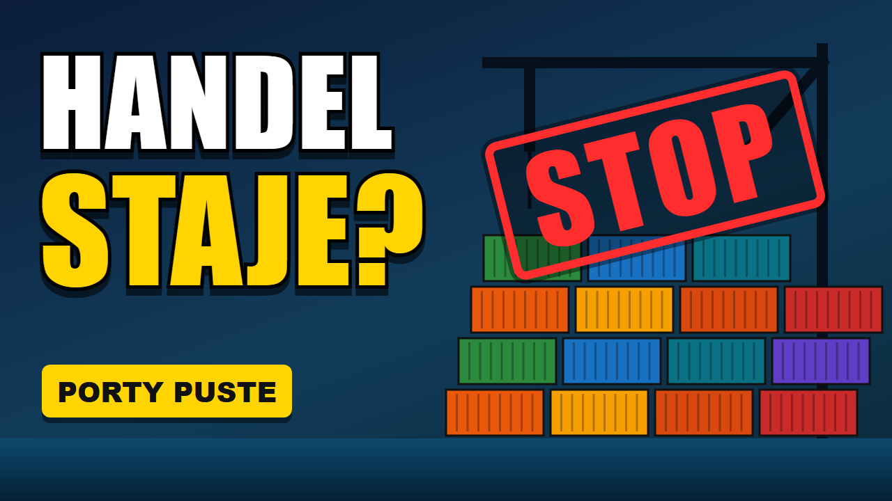
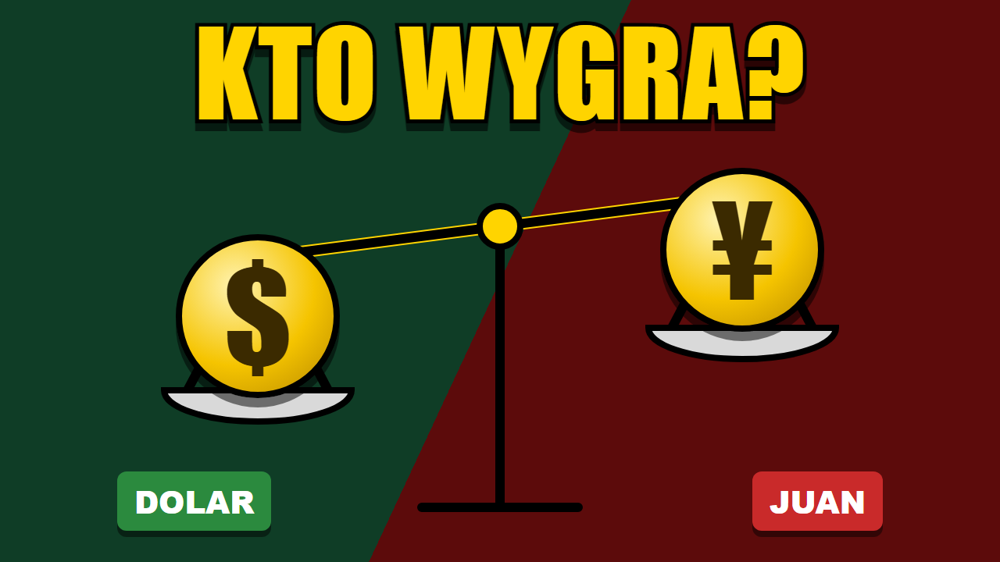
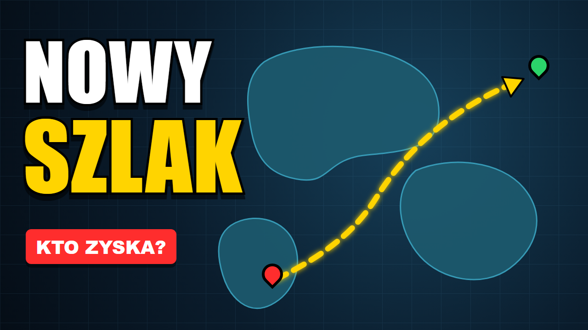
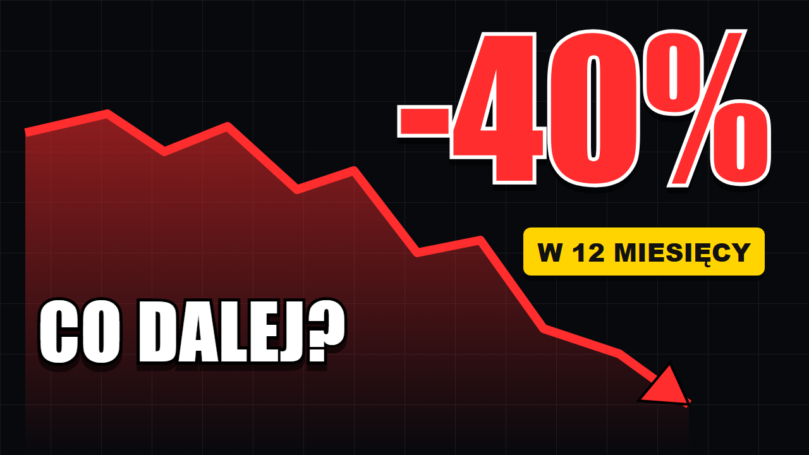
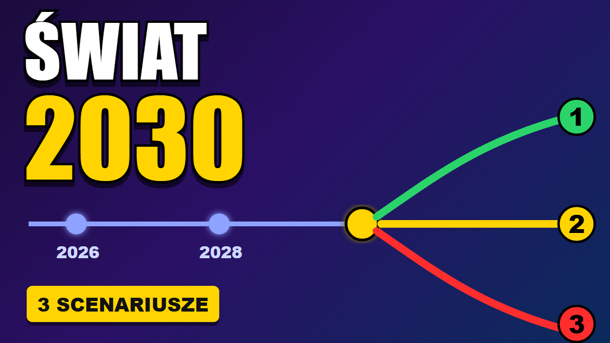

Jak wyglądają na liście proponowanych filmów
Ten sam plik w rozmiarze 168 × 94 px, takim jak w kolumnie obok odtwarzacza.
Przygotowane pod zlecenie „Grafik do miniatur”. Format 1280 × 720 px, jeden mocny element, najwyżej trzy słowa i kontrast czytelny na telefonie. Grafiki własne, bez zdjęć z banków i bez obrazów z AI; tematy przykładowe.





Ten sam plik w rozmiarze 168 × 94 px, takim jak w kolumnie obok odtwarzacza.